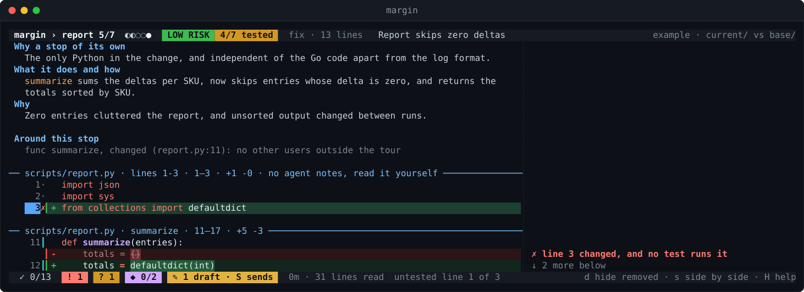
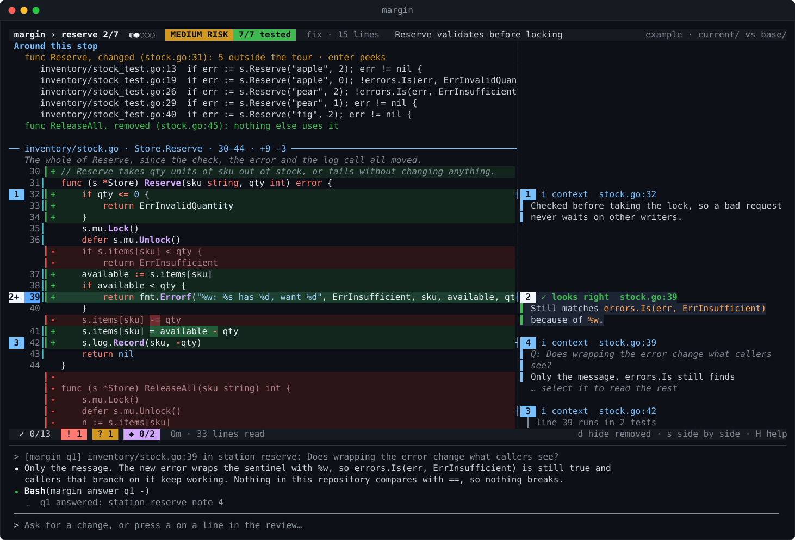
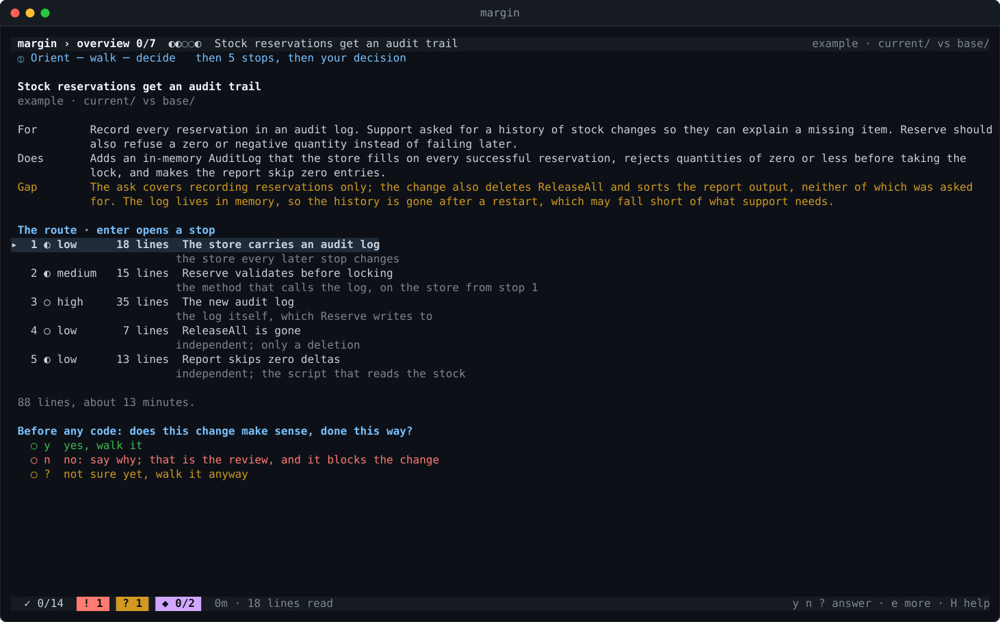
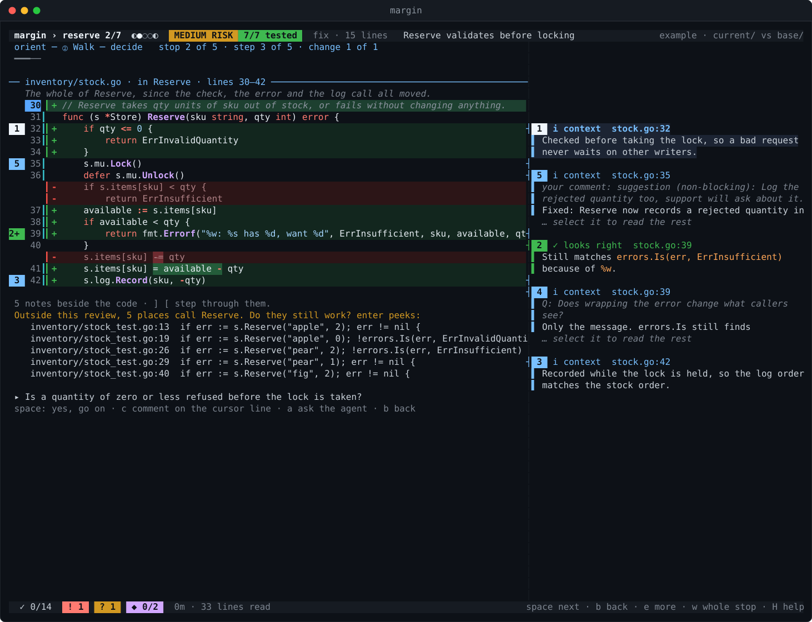
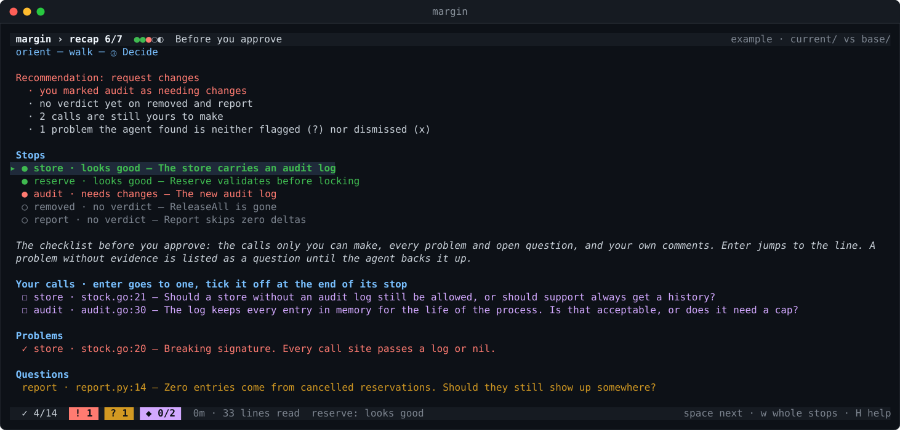
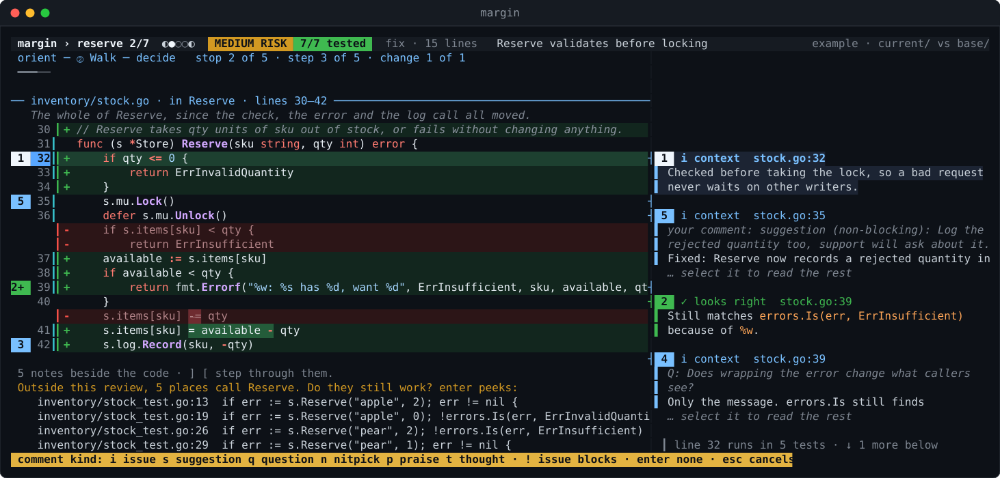
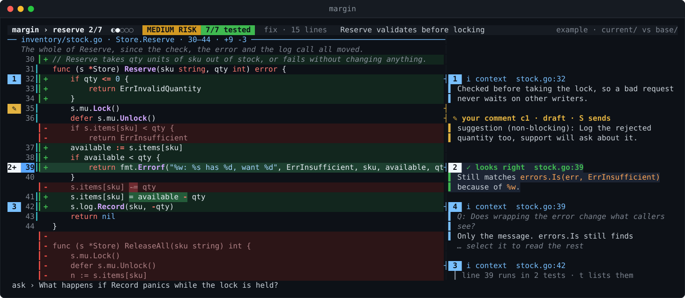
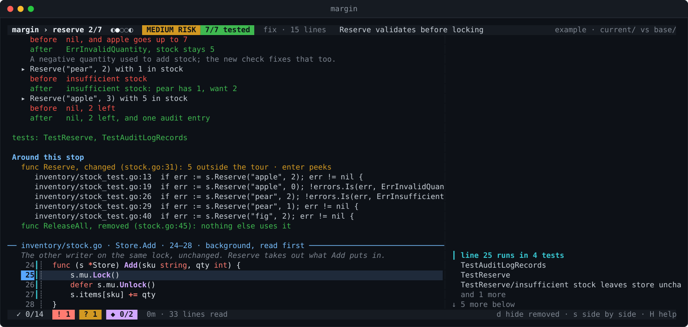
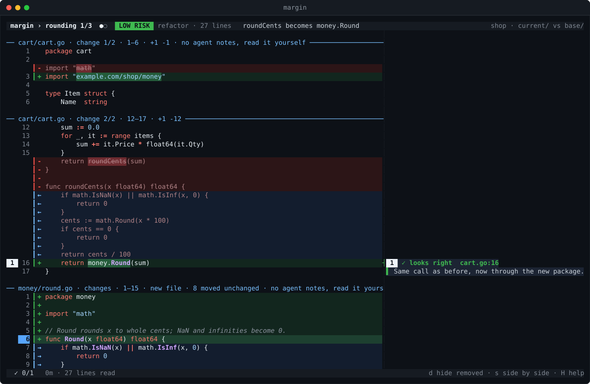
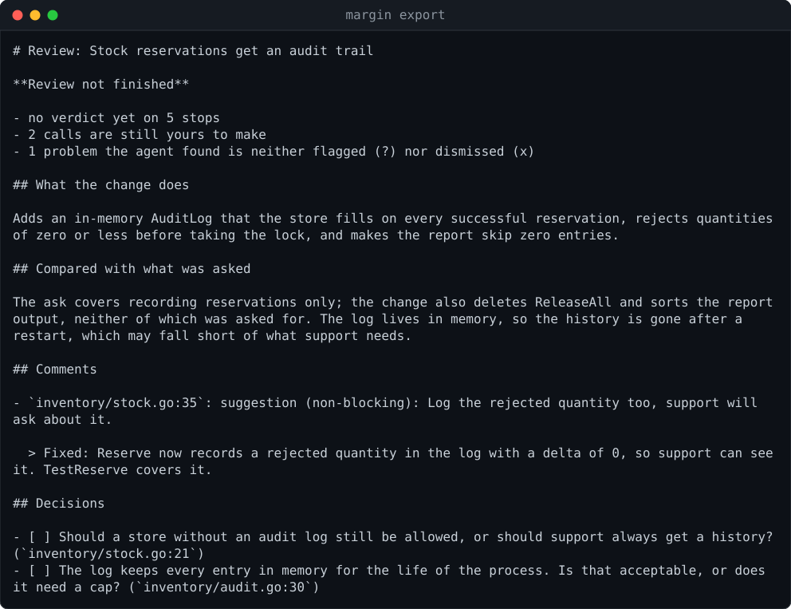

Which changed lines does no test run?
The agent measures coverage per test. Untested lines are marked in the gutter; u jumps between them, t lists the tests that run a line.

Review git changes in the terminal with a coding agent beside you, writing in the margin of every change.
needs go 1.24+, git and tmux · agent defaults to claude, any CLI agent via $MARGIN_AGENT

Inside any repository, margin opens the changed code next to a fresh agent. The diff is drawn in the gutter; the agent's comments sit beside each change as it writes them. Press a on a line to ask about it, ask for a fix in the agent's pane, and watch the answer land in the review.
margin # review uncommitted changes margin --staged # review only what is staged margin feature-x # a branch against the main branch margin a1b2c3d # one commit margin --pr 123 # a GitHub pull request, read-only
The review and the agent share a private tmux server attached to a single pane. Run margin again and it reattaches where you left off, with your verdicts, marks and comments intact.
margin walks you through the review one step at a time. The top line always says where you are.
One screen, one question. What the change is for, what it does, the gap between them, and the route through it. Then, before any code: does this change make sense, done this way? y ? n

Each stop opens with a card: what it is, its risk, why now, the one thing to check. Then one reading unit per step, the agent's notes numbered beside their lines, and a question to answer before space. Import edits wait together at the end. A verdict closes the stop: 1 2 3

The recap turns your verdicts into a recommendation — approve, request changes, or not finished — and lists exactly what is left. margin export prints it ready to paste. margin never posts on its own.

The agent measures coverage per test. Untested lines are marked in the gutter; u jumps between them, t lists the tests that run a line.

c first asks what kind of comment it is, after Conventional Comments, then tells you what a good one of that kind contains while you type.

The question is typed into the agent's pane; the answer comes back as a note anchored on that line.

Around each stop: who calls the changed function, what the code did before and does now, and the commits that shaped it. enter peeks.

Code that only moved is shown as moved, not as a deletion and an addition you have to compare by eye.

Markdown to paste into the pull request, or --format github for gh api with the matching event. You press send.

Every choice in the walk follows something the research on code review found.
margin resumes where you stopped.review quality drops past either--end-of-options..margin/ignore and .margin/instructions are read from the commit compared against, so a change cannot rewrite the rules it is reviewed by.